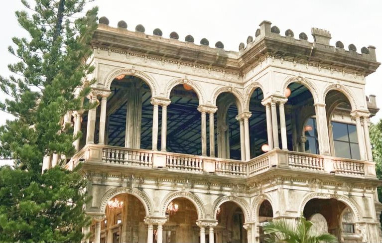
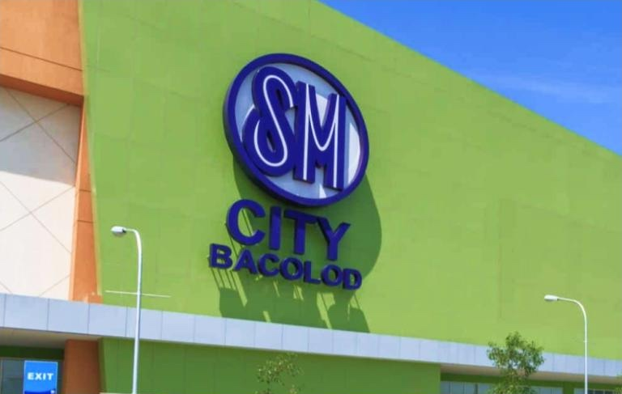
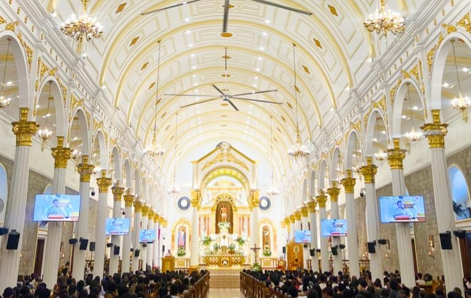
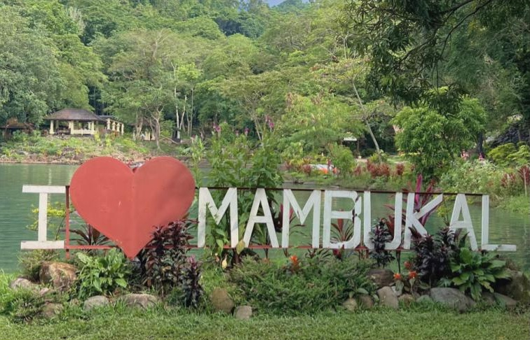

ザ・ルーインズ
ザ・ルーインズは、バコロドで人気の観光名所です。スペイン統治時代にスペイン人富豪が、亡き妻と10人の子どもたちのために建てた邸宅でした。太平洋戦争中、ゲリラ軍が日本軍の利用を防ぐために焼き払いましたが、現在は美しい廃墟として一般公開されています。

SMシティ・バコロド
ショッピングなら、海沿いのSMシティ・バコロドがおすすめです。流行のショップやスーパー、人気の日本食レストランなどが揃い、広いフードコートもあります。他にも「シティモール」「ガイサノノール」「シティモール」など学校から歩いていけるショッピングモールもおすすめです。

サン・セバスチャン大聖堂
サン・セバスチャン大聖堂は、19世紀後半に建てられたカトリック教会です。ギマラス島のサンゴ石で造られ、入口上部にはキリスト像が立ちます。白を基調とした落ち着いた空間で、地元の人と静かに祈りをささげられます。

マンブカル
マンブカルは温泉リゾートで有名な街で、バコロドから車で約1時間。日帰りツアーも便利です。露天風呂や温水プールのほか、バスケットコートやジップラインなどのアクティビティも充実。水着を忘れずに持参し、遊んだ後は温泉でゆったり過ごしましょう。宿泊すればさらにのんびり楽しめます。